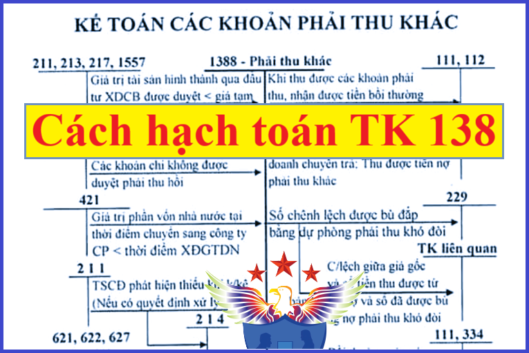

Hướng dẫn cách hạch toán khoản phải thu khác- Tài khoản 138 áp dụng chế độ kế toán theo Thông tư 99/2025/TT-BTC mới nhất 2026, cách hạch toán khoản chi hộ, ủy thác xuất - nhập khẩu, tài sản thiếu chờ xử lý, hạch toán tiền lãi cho vay, tiền đặt cọc, ký cược...
1. Tài khoản 138 - Phải thu khác
Nguyên tắc kế toán
Tài khoản này dùng để phản ánh các khoản phải thu ngoài phạm vi đã phản ánh ở các Tài khoản 131, 133, 136 và tình hình thanh toán các khoản phải thu này, gồm những nội dung chủ yếu sau:
- Giá trị tài sản thiếu nhưng chưa xác định được nguyên nhân, chờ xử lý;
- Các khoản phải thu về bồi thường vật chất do cá nhân, tập thể (trong và ngoài doanh nghiệp) gây ra như mất mát, hư hỏng vật tư, hàng hóa, tiền vốn,... đã được xử lý bắt bồi thường;
- Các khoản cho bên khác mượn bằng tài sản phi tiền tệ (nếu cho mượn bằng tiền thì phải kế toán là cho vay trên Tài khoản 1283);
- Các khoản đã chi đầu tư XDCB, chi phí sản xuất, kinh doanh... nhưng không được cấp có thẩm quyền phê duyệt phải thu hồi;
- Các khoản chi hộ phải thu hồi, như các khoản bên nhận ủy thác xuất nhập khẩu chi hộ cho bên giao ủy thác xuất khẩu về phí ngân hàng, phí giám định hải quan, phí vận chuyển, bốc vác, các khoản thuế,...
- Khoản phải thu về cổ tức, lợi nhuận được chia bằng tiền hoặc tài sản phi tiền tệ từ các hoạt động đầu tư tài chính;
- Thuế tiêu thụ đặc biệt của hàng nhập khẩu (ví dụ mặt hàng xăng nhập khẩu theo quy định của pháp luật thuế) đã nộp, được khấu trừ hoặc hoàn theo quy định của pháp luật thuế;
- Giá trị tài sản mang đi đầu tư vào hợp đồng hợp tác kinh doanh;
- Các khoản phải thu khác ngoài các khoản trên.
2. Kết cấu và nội dung Tài khoản 138
|
Bên Nợ: |
Bên Có: |
|
- Giá trị tài sản thiếu chờ xử lý; - Phải thu của cá nhân, tập thể (trong và ngoài doanh nghiệp) đối với tài sản thiếu đã xác định rõ nguyên nhân; - Số thuế tiêu thụ đặc biệt của hàng nhập khẩu đã nộp được khấu trừ hoặc được hoàn theo quy định của pháp luật thuế; - Giá trị tài sản doanh nghiệp đem đầu tư vào hợp đồng hợp tác kinh doanh; - Phải thu về cổ tức, lợi nhuận được chia bằng tiền từ các hoạt động đầu tư tài chính; - Các khoản chi hộ bên thứ ba phải thu hồi, các khoản phải thu khác; - Đánh giá lại các khoản phải thu khác là khoản mục tiền tệ có gốc ngoại tệ (trường hợp tỷ giá ngoại tệ tăng so với đơn vị tiền tệ trong kế toán). |
- Kết chuyển giá trị tài sản thiếu vào các tài khoản liên quan theo quyết định ghi trong biên bản xử lý; - Số thuế tiêu thụ đặc biệt của hàng nhập khẩu đã khấu trừ hoặc đã hoàn theo quy định của pháp luật thuế; - Giá trị tài sản hoặc lợi ích doanh nghiệp được chia từ hợp đồng hợp tác kinh doanh sang tài khoản liên quan; - Số tiền đã thu được về các khoản phải thu khác; - Đánh giá lại các khoản phải thu khác là khoản mục tiền tệ có gốc ngoại tệ (trường hợp tỷ giá ngoại tệ giảm so với đơn vị tiền tệ trong kế toán). |
|
Số dư bên Nợ: Các khoản nợ phải thu khác chưa thu được hiện còn tại thời điểm kết thúc kỳ kế toán. |
Tài khoản 138 - Phải thu khác, có 3 tài khoản cấp 2:
- Tài khoản 1381 - Tài sản thiếu chờ xử lý: Phản ánh giá trị tài sản thiếu chưa xác định rõ nguyên nhân, còn chờ quyết định xử lý.
Về nguyên tắc trong mọi trường hợp phát hiện thiếu tài sản, doanh nghiệp phải truy tìm nguyên nhân và người phạm lỗi để có biện pháp xử lý cụ thể. Chỉ hạch toán vào Tài khoản 1381 - Tài sản thiếu chờ xử lý đối với các tài sản chưa xác định được nguyên nhân về thiếu, mất mát, hư hỏng phải chờ xử lý. Trường hợp tài sản thiếu đã xác định được nguyên nhân và đã có biên bản xử lý ngay trong kỳ thì ghi vào các tài khoản liên quan, không hạch toán qua Tài khoản 1381 - Tài sản thiếu chờ xử lý.
Trường hợp khi lập báo cáo tài chính, nếu không có bằng chứng chắc chắn cho thấy tài sản thiếu chờ xử lý có khả năng thu hồi thì doanh nghiệp phải ghi nhận giá trị tài sản thiếu đó vào chi phí để xác định kết quả kinh doanh trong kỳ. Đồng thời, doanh nghiệp phải thuyết minh trên Báo cáo tài chính của doanh nghiệp về giá trị tài sản thiếu chờ xử lý đã được ghi nhận vào kết quả kinh doanh trong kỳ, thời hạn doanh nghiệp dự kiến sẽ xác định rõ được nguyên nhân của từng loại tài sản thiếu chờ xử lý trên Báo cáo tài chính kỳ này, kết quả xử lý tài sản thiếu chờ xử lý đã phản ánh trên Báo cáo tài chính kỳ trước,...
- Tài khoản 1383 - Thuế TTĐB của hàng nhập khẩu: Phản ánh số thuế tiêu thụ đặc biệt của hàng nhập khẩu (ví dụ xăng nhập khẩu,…), (trừ trường hợp thuế TTĐB của hàng tạm nhập - tái xuất đã nộp) được khấu trừ hoặc hoàn theo quy định của pháp luật thuế.
- Tài khoản 1388 - Phải thu khác: Phản ánh các khoản phải thu của doanh nghiệp ngoài phạm vi các khoản phải thu phản ánh ở các Tài khoản 1381, 1383, như: Phải thu hoạt động đầu tư của doanh nghiệp vào hợp đồng hợp tác kinh doanh; Phải thu các khoản cổ tức, lợi nhuận được chia bằng tiền hoặc tài sản phi tiền tệ; Phải thu về tiền lãi; Phải thu các khoản bồi thường, thuế TTĐB của hàng tạm nhập - tái xuất mà không thuộc quyền sở hữu của doanh nghiệp,...
3. Cách hạch toán phải thu khác một số nghiệp vụ:
|
1. TSCĐ hữu hình dùng cho hoạt động sản xuất, kinh doanh phát hiện thiếu, chưa xác định rõ nguyên nhân, chờ xử lý, ghi:
Nợ TK 138 - Phải thu khác (1381) (giá trị còn lại của TSCĐ)
Nợ TK 214 - Hao mòn TSCĐ (giá trị hao mòn)
Có TK 211 - TSCĐ hữu hình (nguyên giá).
2. TSCĐ hữu hình dùng cho hoạt động phúc lợi phát hiện thiếu, chưa xác định rõ nguyên nhân, chờ xử lý, ghi giảm TSCĐ, ghi:
Nợ TK 214 - Hao mòn TSCĐ (giá trị hao mòn)
Nợ TK 3533 - Quỹ phúc lợi đã hình thành TSCĐ (giá trị còn lại) (TSCĐ dùng cho hoạt động phúc lợi)
Có TK 211 - TSCĐ hữu hình (nguyên giá).
Đồng thời phản ánh phần giá trị còn lại của tài sản thiếu chờ xử lý, ghi:
Nợ TK 138 - Phải thu khác (1381)
Có TK 353 - Quỹ khen thưởng, phúc lợi (3532).
3. Đối với tiền mặt tồn quỹ, vật tư, hàng hóa,... phát hiện thiếu khi kiểm kê:
Mọi trường hợp tiền mặt, vật tư, hàng hóa,... trong quỹ, trong kho hoặc tại nơi quản lý, nơi bảo quản bị phát hiện thiếu khi kiểm kê đều phải lập biên bản và truy tìm nguyên nhân, xác định người phạm lỗi. Căn cứ vào biên bản kiểm kê và quyết định xử lý của cấp có thẩm quyền để ghi sổ kế toán:
a) Trường hợp tài sản phát hiện thiếu đã xác định được ngay nguyên nhân:
- Nếu do nhầm lẫn hoặc chưa ghi sổ phải tiến hành ghi bổ sung hoặc điều chỉnh lại số liệu trên sổ kế toán;
- Nếu giá trị vật tư, hàng hóa hao hụt trong phạm vi định mức, ghi:
Nợ TK 632 - Giá vốn hàng bán
Có các TK 152, 153, 155, 156.
- Nếu xác định có người phải chịu trách nhiệm thì căn cứ nguyên nhân hoặc người chịu trách nhiệm bồi thường, ghi:
Nợ TK 138 - Phải thu khác (1388) (số phải bồi thường)
Nợ TK 334 - Phải trả người lao động (số bồi thường trừ vào lương)
Nợ TK 632 - Giá vốn hàng bán (giá trị hao hụt, mất mát của hàng tồn kho sau khi trừ số thu bồi thường theo quyết định xử lý)
Có các TK 111, 112, 152, 153, 155, 156,...
b) Nếu số hao hụt, mất mát chưa xác định rõ nguyên nhân phải chờ xử lý, căn cứ vào giá trị hao hụt, ghi:
Nợ TK 138 - Phải thu khác (1381)
Có các TK 111, 152, 153, 155, 156,...
- Khi có quyết định xử lý, căn cứ vào quyết định, ghi:
Nợ các TK 111, 112 (nếu người phạm lỗi nộp tiền bồi thường)
Nợ TK 138 - Phải thu khác (1388) (nếu phải thu tiền bồi thường của người phạm lỗi)
Nợ TK 334 - Phải trả người lao động (nếu trừ vào tiền lương của người phạm lỗi)
Nợ TK 632 - Giá vốn hàng bán (giá trị hao hụt mất mát của hàng tồn kho sau khi trừ số thu bồi thường theo quyết định xử lý)
Nợ TK 811 - Chi phí khác (Tiền, phần giá trị còn lại của TSCĐ thiếu qua kiểm kê phải tính vào chi phí khác của doanh nghiệp)
Có TK 138 - Phải thu khác (1381).
4. Các khoản cho mượn tài sản phi tiền tệ, ghi:
Nợ TK 138 - Phải thu khác (1388)
Có các TK 152, 153, 155, 156,...
5. Các khoản chi hộ bên thứ ba phải thu hồi, các khoản phải thu khác, ghi:
Nợ TK 138 - Phải thu khác (1388)
Có các TK liên quan.
Xem thêm: Cách hạch toán doanh thu chưa thực hiện
6. Kế toán giao dịch ủy thác xuất - nhập khẩu tại bên nhận ủy thác:
a) Khi bên nhận ủy thác chi hộ cho bên giao ủy thác, ghi:
Nợ TK 138 - Phải thu khác (1388) (nếu bên giao ủy thác chưa ứng tiền)
Nợ TK 3388 - Phải trả, phải nộp khác (trừ vào tiền đã nhận của bên giao ủy thác)
Có các TK 111, 112,...
b) Khi được doanh nghiệp ủy thác xuất khẩu thanh toán bù trừ với các khoản đã chi hộ, doanh nghiệp nhận ủy thác xuất khẩu, ghi:
Nợ TK 338 - Phải trả, phải nộp khác (3388)
Có TK 138 - Phải thu khác (1388).
c) Kế toán chi tiết các giao dịch thanh toán xuất - nhập khẩu ủy thác được thực hiện theo hướng dẫn của tài khoản 338 - Phải trả, phải nộp khác; Kế toán các khoản thuế GTGT hàng nhập khẩu, thuế TTĐB, thuế nhập khẩu tại bên giao và nhận ủy thác thực hiện theo hướng dẫn của tài khoản 333 - Thuế và các khoản phải nộp Nhà nước.
7. Phản ánh cổ tức, lợi nhuận được chia bằng tiền hoặc tài sản phi tiền tệ từ hoạt động đầu tư tài chính, ghi:
Nợ TK 138 - Phải thu khác (1388)
Có TK 515 - Doanh thu hoạt động tài chính.
8. Khi thu được tiền của các khoản phải thu khác, ghi:
Nợ các TK 111, 112
Có TK 138 - Phải thu khác (1388).
9. Căn cứ quyết định xử lý khoản phải thu khác, ghi:
Nợ các TK 111, 112 (nếu số bồi thường được thu bằng tiền)
Nợ TK 334 - Phải trả người lao động (nếu số bồi thường trừ vào lương)
Nợ TK 229 - Dự phòng tổn thất tài sản (2293) (nếu được bù đắp bằng khoản dự phòng nợ phải thu khó đòi)
Nợ TK 642 - Chi phí quản lý doanh nghiệp (nếu tính vào chi phí)
Có TK 138 - Phải thu khác (1388).
Việc hoàn nhập các khoản dự phòng đã trích lập đối với các khoản nợ phải thu khó đòi có thể được ghi nhận ngay cho từng giao dịch tại thời điểm xử lý khoản phải thu khác hoặc khi xác định số trích lập dự phòng nợ phải thu khó đòi vào cuối mỗi kỳ kế toán nhưng phải nhất quán theo quy định của chuẩn mực kế toán Việt Nam.
10. Khi các doanh nghiệp hoàn thành thủ tục bán các khoản phải thu khác (đang được phản ánh trên Báo cáo tình hình tài chính) cho công ty mua bán nợ, ghi:
Nợ các TK 111, 112,... (số tiền thu được từ việc bán khoản phải thu)
Nợ TK 229 - Dự phòng tổn thất tài sản (2293) (số chênh lệch được bù đắp bằng khoản dự phòng nợ phải thu khó đòi)
Nợ các TK liên quan (số chênh lệch giữa giá gốc khoản nợ phải thu với số tiền thu được từ bán khoản nợ và số đã được bù đắp bằng khoản dự phòng nợ phải thu khó đòi)
Có TK 138 - Phải thu khác (1388) (giá trị ghi sổ khoản phải thu khác).
Việc hoàn nhập các khoản dự phòng đã trích lập đối với các khoản nợ phải thu khó đòi có thể được ghi nhận ngay cho từng giao dịch tại thời điểm bán khoản phải thu khác hoặc khi xác định số trích lập dự phòng nợ phải thu khó đòi vào cuối mỗi kỳ kế toán nhưng phải nhất quán theo quy định của chuẩn mực kế toán Việt Nam.
11. Các khoản chi đầu tư XDCB, chi phí SXKD nhưng không được cấp có thẩm quyền phê duyệt phải thu hồi, ghi:
Nợ TK 138 - Phải thu khác (1388)
Có các TK 241, 641, 642,....
12. Kế toán thuế tiêu thụ đặc biệt của hàng nhập khẩu
- Đối với số thuế tiêu thụ đặc biệt phải nộp ở khâu nhập khẩu của các mặt hàng sẽ được khấu trừ hoặc được hoàn theo quy định của pháp luật thuế, doanh nghiệp căn cứ vào hóa đơn mua hàng nhập khẩu và thông báo nộp thuế của cơ quan có thẩm quyền, xác định số thuế tiêu thụ đặc biệt phải nộp của hàng nhập khẩu, ghi:
Nợ TK 1383 - Thuế TTĐB của hàng nhập khẩu
Có TK 3332 - Thuế tiêu thụ đặc biệt.
- Khi nộp thuế TTĐB của hàng nhập khẩu, căn cứ vào chứng từ liên quan, ghi:
Nợ TK 3332 - Thuế tiêu thụ đặc biệt
Có các TK 111, 112,....
- Trong kỳ, phản ánh số thuế TTĐB của hàng nhập khẩu (ví dụ như xăng sinh học) đã nộp ở khâu nhập khẩu được khấu trừ với số thuế TTĐB phải nộp ở khâu bán ra, ghi:
Nợ TK 3332 - Thuế tiêu thụ đặc biệt (phần được khấu trừ)
Nợ TK 632 - Giá vốn hàng bán {phần chênh lệch giữa số thuế TTĐB được khấu trừ đã nộp ở khâu nhập khẩu lớn hơn số thuế TTĐB của hàng nhập khẩu phải nộp ở khâu bán ra (trừ mặt hàng được hoàn thuế TTĐB ở khâu nhập khẩu, ví dụ như xăng sinh học)}
Có TK 1383 - Thuế TTĐB của hàng nhập khẩu (số thuế TTĐB được khấu trừ trong kỳ của hàng nhập khẩu).
- Trường hợp trong kỳ số thuế TTĐB của hàng nhập khẩu đã nộp ở khâu nhập khẩu nhỏ hơn số thuế TTĐB phải nộp ở khâu bán ra thì doanh nghiệp phải nộp phần chênh lệch vào NSNN, ghi:
Nợ TK 3332 - Thuế tiêu thụ đặc biệt
Có các TK 111, 112
- Trường hợp doanh nghiệp được hoàn số thuế TTĐB của mặt hàng (ví dụ xăng sinh học) đã nộp ở khâu nhập khẩu, ghi:
Nợ các TK 111, 112,....
Có TK 1383 - Thuế TTĐB của hàng nhập khẩu.
|
Kế toán Diệu Tâm chúc bạn thành công! Học thực hành kế toán thực tế tốt nhất tại Hà Nội, dạy thực hành lập BCTC, Quyết toán thuế trực tiếp trên chứng từ thực tế.
----------------------------------------------------------
